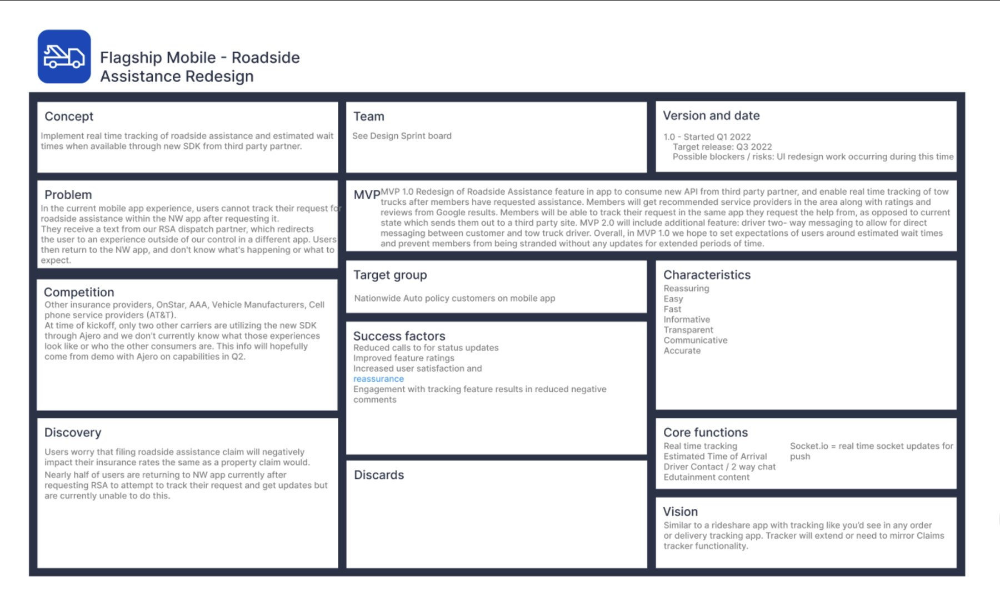

We couldn't control when help arrived. We could control whether customers were left guessing.
Nationwide: redesigning roadside assistance in the flagship mobile app, with the industry's first live tow-truck tracking.
- Company
- Nationwide Insurance
- Product
- Flagship mobile app: roadside assistance
- My role
- Lead UX Design Consultant: end-to-end design, research direction, engineering partnership
- Team
- Product owner, claims mobile pod, product analyst, UX researcher, creative services, accessibility, Agero (dispatch partner)
- Timeline
- About two quarters, kicked off Q1 2022
- Recognition
- Keynova "Best in Class," Q1 2023; Nationwide NATALIE Award
It started with an app store review I couldn't put down
During onboarding in December 2021, I came across this review of our app:
"Tonight I found out what kind of company I am dealing with. I called for roadside assistance thru this app, and I was informed by phone calls that the driver was at my location, but he never actually showed up.
I received a text stating that I would have to wait 133 minutes. I called and spoke with a live person, who essentially blew a bunch of smoke.
As a Black man in Minnesota, standing on the side of the road in -8 degree temperatures, asking for a jump went about as well as could be expected. I called 911, who sent out a crisis intervention team to give me a jump so I could get home, but THANK GOD she didn't send the police.
This is the second time (Company) has done this to me! Last year when this happened the temp was -10.
You get your $197.00 every month but it seems like when I need any assistance, I can't get it from (You). Thank you sincerely from the bottom of my heart. Oh believe me I will be sharing this story online. And thank you once again... grade A service."
Mobile app feedback, December 2021
He could have frozen, been poisoned by carbon monoxide, or been hit by another vehicle, all because he stayed with his disabled car believing help was coming.
The tow itself wasn't the failure. The failure was that we left a customer guessing, on the side of the road, in a situation that was dangerous in more ways than one. Every minute of silence extended his exposure: to the cold, and to how a roadside encounter could go for him. I turned that review into a proposal, socialized it with product and senior leadership, and then owned the redesign end to end. It became the first feature built on Nationwide's new design system.
We owned the request, not the truck, and then we went silent
Naming precisely what we could and couldn't fix is what revealed the real problem.
Dispatch ran through a partner
Agero handled fulfillment for several major carriers, including State Farm and USAA. We couldn't make trucks arrive faster.
The fix sat in the backlog
Agero's new Swoop API could return live status and truck location. It had sat unprioritized for months.
Status lived outside our app
After requesting help, customers had to tap a link in a partner text message to track it. Data showed most never did.
Replace silence with information, inside our own app
Our feature canvas set the success factors before any design work began, and they became the scorecard at launch.
Fewer status calls
Customers shouldn't need to phone us to learn where help is.
Self-service success
More requests completed in the app without help.
Feature ratings
Better ratings and fewer negative reviews.
Reassurance
Engagement with live tracking while customers wait.
Duplicate requests
Returning customers were accidentally starting second requests while looking for status.
How the work moved
- DiscoverApp store review, session replays, failure pattern search
- AlignOne-page feature canvas co-written with product, engineering, analytics
- Research15 generative interviews about real roadside emergencies
- DesignForgiving request flow, ETA entry point, live tracking map
- ShipWebSockets with engineering; accessibility review; launch
One angry review isn't a business case. Session replays are.
First, I requested a tow in our own app to confirm it worked as designed. It did. The breakdown was downstream: our dispatch partner had told us about its new API back in September, and it was still sitting in our backlog.
Then, with our product analyst, I pulled session replays in UXCam and reconstructed that customer's actual sessions. Then we searched for the same failure signature across other users.
It had happened to him twice. It wasn't a fluke but a repeatable failure with a traceable cause. That turned an angry review into a prioritizable defect with a ticket number. We brought the replays, not the anecdote, to the product team.
Discovery surfaced two more insights. Nearly half of customers were returning to the Nationwide app after requesting help, trying to track it. And many worried that filing a roadside request would raise their rates, the way a claim might.
One canvas, the same authors on every revision
The product owner, engineering lead, product analyst, and I filled in a one-page feature canvas together: concept, problem, MVP, target users, success factors, risks, and timeline. We referenced it continuously instead of filing it away, so the story never forked. It was the thing we argued in front of, instead of arguing in meetings.

Generative research: begin in empathy, then find the pattern
We interviewed 15 people who had used roadside assistance from any provider in the last 12 months. What did they expect in that moment? How did they decide what to do?
One story reframed the project. A woman in Texas ran out of gas, and her battery died while she waited for the tow truck. Three trucks and several hours later, she took an Uber to a gas station and flagged down a stranger for a jump. The wait hadn't just failed to solve her problem. It created a second, worse one.
Silence creates phone calls
After about 15 minutes without an update, anxiety set in, and anxiety led to a phone call. The call wasn't the problem. The silence was.
Design for shaky hands
People arrive cold and panicked. So: no strict validation, fewer required fields, an illustration-guided flow, and forgiving inputs.
Where should it be towed?
Stranded drivers, often out of town, didn't know where to have their car taken, and they trusted Google ratings. So the map shows nearby repair shops with ratings, reviews, hours, and contact info.
The call I'm proudest of: same pixel, opposite meaning
Returning customers tapped the same button they'd used the first time, expecting a status update, not a new request.
More than half unintentionally started a duplicate request. 96% of those duplicate requests were abandoned by the third screen.
While a request is open, replace the button with a live ETA countdown. It reverts when the job closes.
About half now tap into the tracker, and duplicate requests stopped.
A forgiving request flow, and a truck you can watch arrive
Triage in plain language
Each option has a one-line consequence beneath it, and no insurance vocabulary. Customers confirm their location on a map and drag to submit, so a shaky thumb can't send a request by accident.
Live tracking, honestly real time
The truck moves on the map as it drives. We were the first in the industry to offer it, and the first team at Nationwide to ship WebSockets: real-time push instead of polling. That's the only reason a live countdown could be honest rather than approximate. A 15-minute anxiety threshold can't be solved by a screen that refreshes when you open it. The research finding set the technical requirement, not the other way around, and design and engineering scoped it together from the same canvas.
Prototype walkthrough of the redesigned request flow. More walkthroughs ↗
We can't control when help will arrive. But we can tell you everything we do know, the moment we know it.
What moved
Self-service success
Up from 54%.
Roadside outbound calls
All outbound calls related to roadside assistance dropped from 34% to 4%.
Customer complaints
Fewer complaints once customers could see where help was.
NPS
Net Promoter Score increase.
Duplicate requests
Eliminated once the ETA countdown replaced the request button during open jobs.
Requests in 30 days
Submitted through the app in the first month.
New industry benchmarks
New benchmarking criteria set via Keynova.
In the industry
Live tow-truck tracking; first WebSockets feature shipped at Nationwide.
In leadership's words
Mike Mahaffey, Nationwide's SVP of Corporate Strategy, on the roadside assistance redesign (June 2023, 50 seconds):
- Keynova "Best in Class Experience," Q1 2023
- NATALIE Award: Nationwide's technology and innovation excellence award
What I'd do differently, and what I'm still arguing with myself about
A tradeoff I made
My original interactions relied on a bottom drawer pattern, which a senior designer pushed back on in review. I defended it as appropriate under Material Design's documented guidance. But in the interest of shipping, conceding a component preference was the right call.
An idea from the research
The Texas story suggested a cheaper, faster fix for the simplest cases. I proposed a test-and-learn with rideshare services, letting their nearby drivers deliver fuel to stranded motorists instead of waiting on a small pool of tow trucks.
The idea I'm still arguing with myself about
Priority dispatch through tipping: let customers tip the driver directly to improve their odds of a faster response. The marketplace logic is sound, and it would probably work. That's the problem. This project started with a man who couldn't get help on a −8° roadside. A pay-to-be-rescued-faster tier deprioritizes whoever can least afford to bid, and in an emergency service, willingness to pay is a bad proxy for need. Where I've landed: prioritize by severity and exposure, not price.
What I carry into the next one
Find the person, not the persona. Every meaningful decision here traces back to one comment I refused to file away. The constraint is the brief. We couldn't fix dispatch, and naming that precisely revealed the real problem: silence. Instrument, then argue. Session replay turned an opinion into a defect.